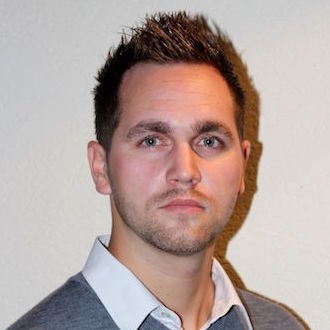

Hi, I’m Steve, a Swiss engineer with a Master’s degree in Communication Systems from EPFL, specializing in computer security. I’ve built my career around network and security engineering through roles at CERN, UNIL, and Navixia, working with technologies such as firewalls, reverse proxies, email security systems, SIEM, vulnerability management, and cloud solutions. I like creating systems that are simple, fast, and reliable, and I’m now channeling this experience into AI-driven e-commerce projects.

Steve Diesbach
EPFL Communications Systems Engineer
/about
/projects
AI-commerce studio — building an automated pipeline to launch, test, and scale online stores using AI with minimal operations.
Security engineering — past projects include designing Check Point firewall architectures, leading F5 load balancer projects to optimize application delivery, and developing secure email infrastructures with Cisco.
Personal tools — building architectures and dashboards to improve organization, structure, and efficiency in daily workflows.
/contact
I’m open to conversations about AI, automation, and pragmatic approaches to security. You can connect with me on LinkedIn, send me an email, or just say hello.
— Steve
Download CV